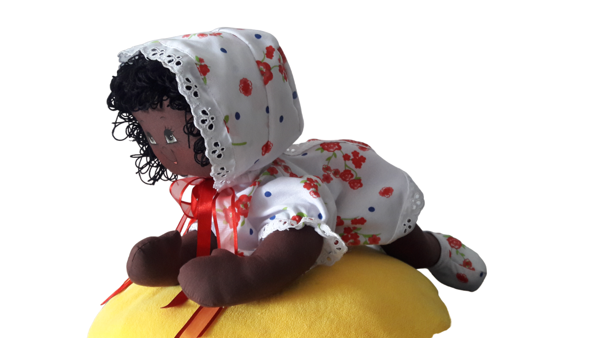
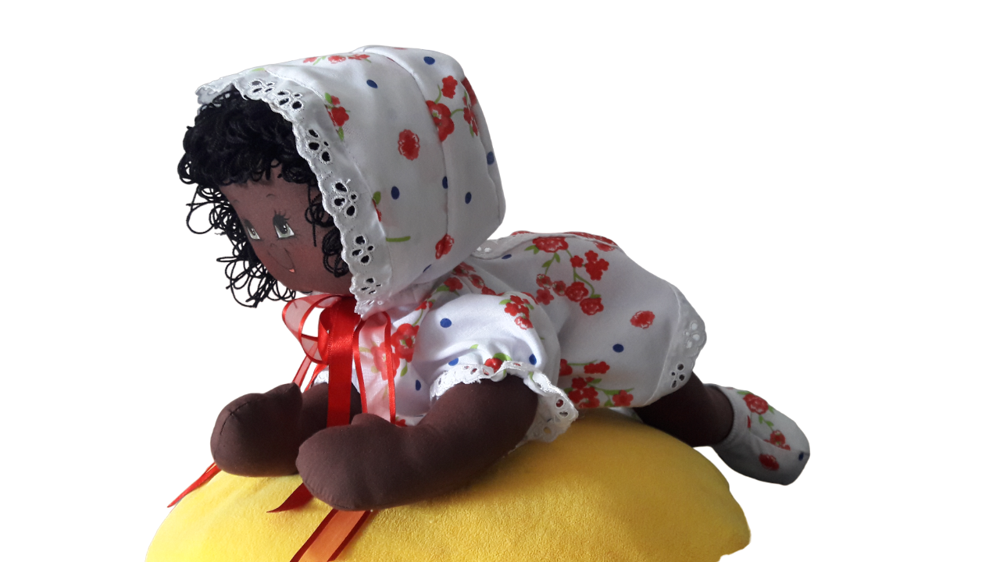

Nuestros servicios
1Diseño
Creamos muñecos de trapo personalizados!
2Restauración
Reparamos tus muñecos!
3Moldes
Vendemos nuestros moldes!
4Aprende
Clases personalizadas!
Galería
 

¿Quiénes somos?

Creadora
Hola, soy Evidalia Torres tengo 61 años y me encanta la costura, el diseño, las manualidades y desde hace 15 años me dedico a crear hermosas muñecas de trapo de excelente calidad y lo mas importante con mi trabajo contribuyo a no dejar en el pasado u olvidar esta bella tradición.
Historia de las Muñecas de Trapo
Desde tiempos inmemoriales, las muñecas de trapo han sido una
parte querida de la infancia en muchas culturas alrededor del
mundo. Estas encantadoras creaciones de tela tienen una historia
rica y variada que se extiende a lo largo de siglos, arraigada en
la creatividad humana, la necesidad y la tradición. Las muñecas de
trapo, también conocidas como muñecas de tela, tienen sus orígenes
en la necesidad de aprovechar al máximo los recursos
disponibles.
En tiempos antiguos, cuando los materiales eran escasos y caros,
especialmente en áreas rurales y entre las clases menos
privilegiadas, las familias confeccionaban juguetes simples para
sus hijos utilizando retazos de tela y otros materiales fácilmente
disponibles. Estas muñecas hechas a mano eran a menudo el único
juguete con el que los niños podían jugar, pero también eran más
que simples juguetes: se convertían en compañeras queridas,
confidentes silenciosas y vehículos para la imaginación.